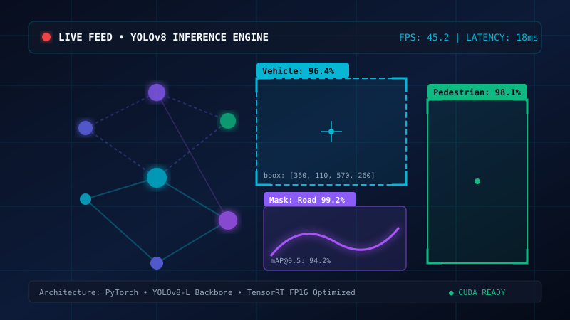
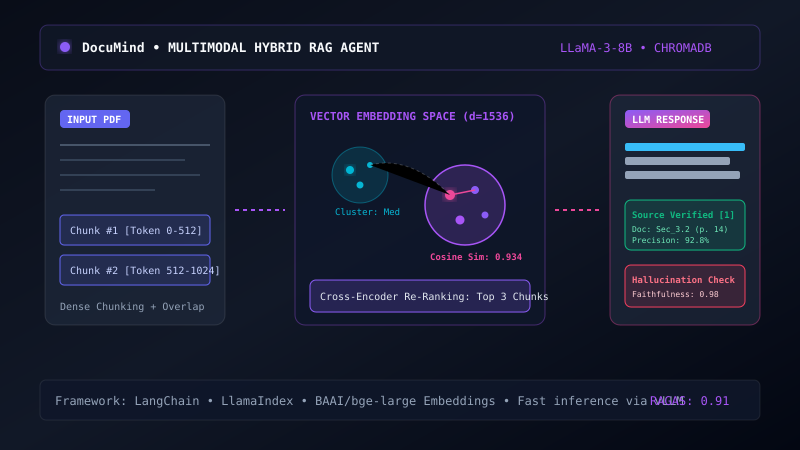
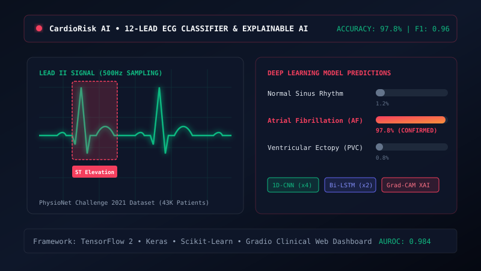
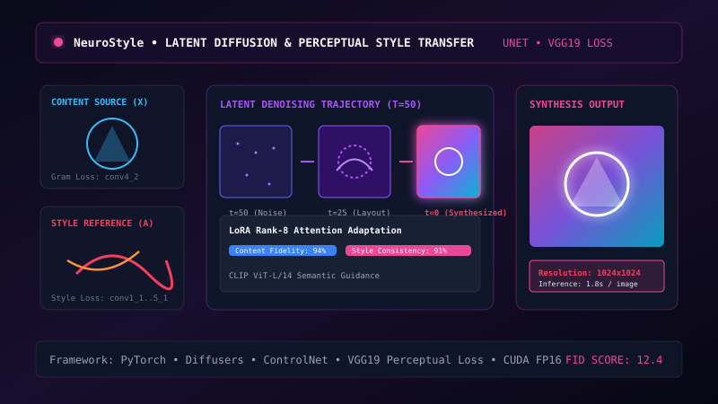

Computer Vision

Hello! I'm Thejas M U, an Artificial Intelligence & Machine Learning undergraduate passionate about neural network architectures, computer vision pipelines, multimodal LLM agents, and mathematical optimization.
Years AI/ML Study
Deep Learning Models
Top Benchmark Acc.
Exploring neural network dynamics from first principles to scalable inference pipelines.
I am an undergraduate student specializing in Artificial Intelligence & Machine Learning, driven by the quest to bridge mathematical machine learning principles with real-world, high-impact intelligent systems. From deriving backpropagation and loss surface dynamics to fine-tuning transformers and quantizing edge vision models, I love exploring how algorithms extract representations from complex data.
When I'm not training models or reading arXiv papers, I'm mentoring peers in PyTorch, participating in Kaggle challenges, and building open-source AI utilities.
Core Coursework: Deep Learning, Natural Language Processing, Computer Vision, Reinforcement Learning, Data Structures & Algorithms, Linear Algebra & Optimization.
Graduated with distinction. Strong mathematical foundation in Differential Calculus, Vectors, and Statistics.
Trained and quantized custom YOLOv8 and Vision Transformer models for edge devices, achieving 45 FPS with FP16 TensorRT optimization.
Conducted hands-on PyTorch and Hugging Face bootcamps, guiding 100+ students in building and evaluating deep learning models.
Competed in computer vision and tabular benchmarks; published reproducible notebooks and fine-tuned community models.
Neural Networks, Hyperparameter Tuning, Convolutional Networks, Sequence Models & Attention Mechanisms.
Computer vision, time-series forecasting, and NLP pipelines built and trained using TensorFlow 2 and Keras.
Engineered an autonomous multimodal medical report analysis assistant in a 36-hour sprint.
Spanning mathematical foundations, deep learning frameworks, and MLOps deployment pipelines.
Deep learning models, vision pipelines, and LLM systems built for performance and reproducibility.




A timeline of machine learning research, student leadership, and continuous experimentation.
Feedback from faculty advisors, internship mentors, and hackathon teammates.
"Thejas demonstrates a rare blend of mathematical intuition and swift implementation speed. His persistence in digging into arXiv papers and implementing neural architectures from scratch is exceptional for an undergraduate."
"During his internship, Thejas tackled model quantization and RAG pipelines with remarkable curiosity and velocity. He writes clean, modular PyTorch code and communicates experimental findings with scientific clarity."
"Thejas is the teammate you want when solving challenging deep learning problems under tight hackathon deadlines. His grasp of PyTorch and computer vision pipelines was central to our first-place hackathon finish."
Interested in offering an ML internship, discussing research collaborations, or building something intelligent together? Send a message!
thejasmu4@gmail.com
Bengaluru, India (Open to Remote & Relocation)
Open for 2026/2027 ML Engineering & Research Internships